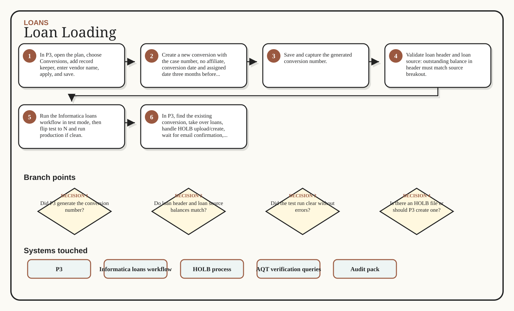

01
In P3, open the plan, choose Conversions, add record keeper, enter vendor name, apply, and save.
Loan loading starts in P3 with vendor/conversion setup, moves through Informatica test and production runs using loan header and loan source files, and ends with P3 takeover, HOLB handling, email confirmation, and query verification.
In P3, open the plan, choose Conversions, add record keeper, enter vendor name, apply, and save.
Create a new conversion with the case number, no affiliate, conversion date and assigned date three months before effective date, and effective date.
Save and capture the generated conversion number.
Validate loan header and loan source: outstanding balance in header must match source breakout.
Run the Informatica loans workflow in test mode, then flip test to N and run production if clean.
In P3, find the existing conversion, take over loans, handle HOLB upload/create, wait for email confirmation, and run verification queries.
Conversion and assigned dates are largely irrelevant but required; use three months prior to effective date.
Header/source balance mismatch must be fixed before loading.
Do not skip the test run before production.
The audit pack needs loan evidence, often close to the loan header detail.
